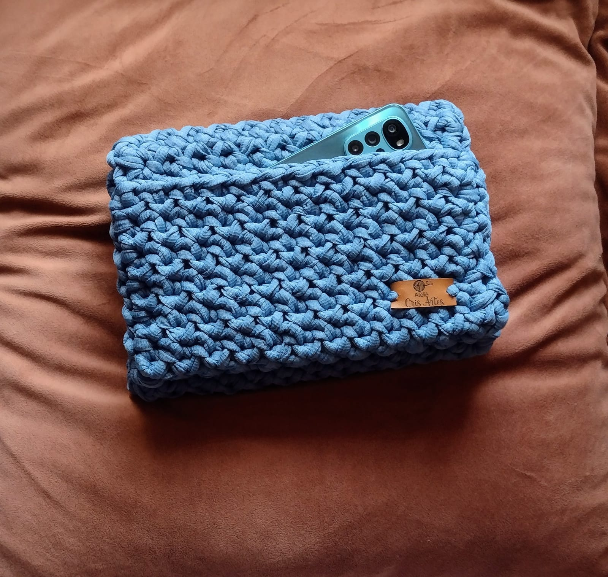

Carteiras de crochê é uma peça perfeita pra quem procura, praticidade, qualidade e um estilo único, nela você carrega tudo que precisa ter a mão, celular, documentos e chave.
São extremamente versáteis e podem ser usadas em diversas ocasiões .
Outra grande vantagem das carteiras de crochê é que elas são ecologicamente corretas. Ao contrário de carteiras feitas de materiais sintéticos ou couro animal, que têm um impacto significativo no meio ambiente, as carteiras de crochê são feitas com fios de algodão, lã ou outros materiais naturais.
Carteiras de crochê:
